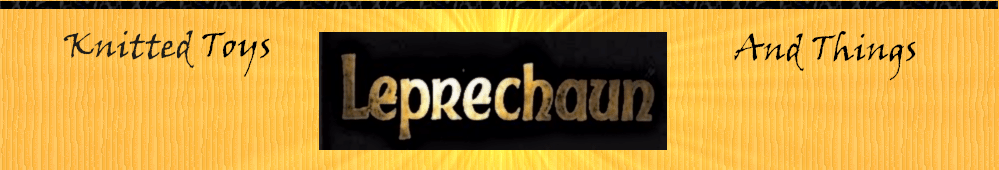

Главная
О созданиях
Игрушки
Аксессуары
Броши:
Эта троица украсит любой повседневный образ, добавит детской дерзости и в то же время нежности. Все брошки связаны из ириса и тонированы сухой пастелью.
Дизайнер: Анна Гатыло.